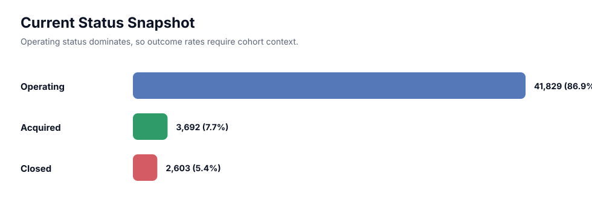
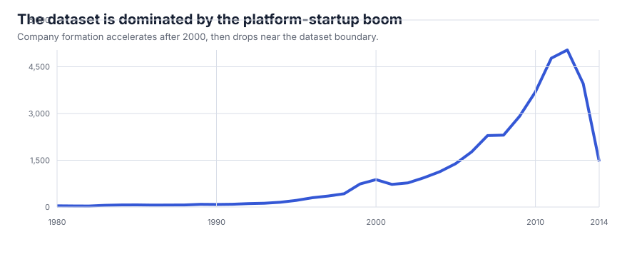
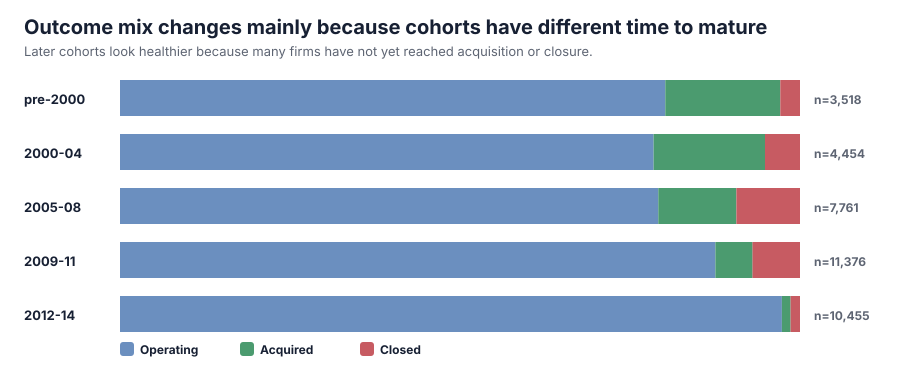
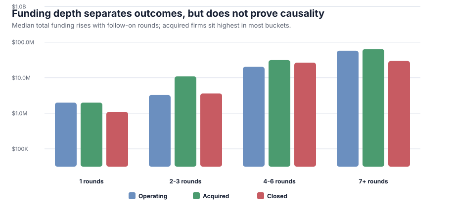
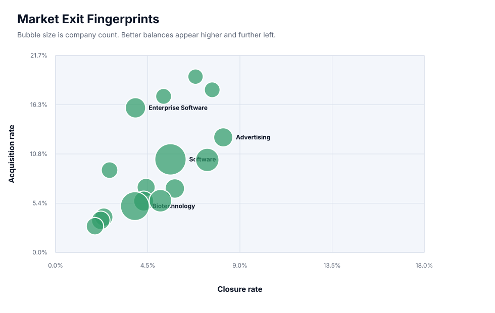

Venture Outcomes Under Censoring
A descriptive study of how startup status, funding depth, founding cohort, and market structure interact in a static Crunchbase investment snapshot. The central point is not that funding mechanically causes success; it is that startup data must be read through time-to-outcome and survivorship bias.
Executive Findings
In mature 2000-2008 founding cohorts, 13.3% of companies are marked acquired and 7.8% are marked closed. Later cohorts should not be compared directly because many companies have not had enough time to reach an exit or failure event.
Dataset Audit
The file contains firm-level Crunchbase records: market, geography, founding year, total disclosed funding, funding rounds, and current status. It is a useful public dataset for portfolio analysis, but it is not a complete population of all startups. It overrepresents companies visible to venture databases and underrepresents unreported small firms.

Cohort Effects
Operating status dominates because the dataset contains many young firms. For this reason, outcome analysis is most meaningful when founding year is treated as a proxy for time at risk.


Funding Depth
The funding ladder shows a consistent descriptive pattern: companies with more rounds have higher median disclosed funding, and acquired firms tend to sit above operating and closed firms within comparable round buckets. This is selection, not causal proof.

Market Exit Fingerprints
Market categories differ in both acquisition and closure rates. Software is large, but not automatically the most favorable by outcome mix. Enterprise Software and Advertising show relatively stronger acquisition balance among high-volume categories, while Curated Web and Games show comparatively higher closure pressure.

| Market | Companies | Acquired | Closed | Median Funding |
|---|---|---|---|---|
| Enterprise Software | 1,256 | 15.9% | 3.9% | $3.1M |
| Software | 4,527 | 10.2% | 5.6% | $2.0M |
| Advertising | 1,026 | 12.7% | 8.2% | $2.0M |
| Mobile | 1,944 | 10.2% | 7.4% | $2.0M |
| Finance | 837 | 7.2% | 4.4% | $2.0M |
| Education | 848 | 3.9% | 2.4% | $2.0M |
| Health Care | 1,185 | 5.7% | 4.3% | $5.1M |
| Health and Wellness | 906 | 3.5% | 2.2% | $2.0M |
| Biotechnology | 3,588 | 5.1% | 3.9% | $4.9M |
| Hardware + Software | 1,065 | 7.0% | 5.8% | $2.4M |
Limitations
This report makes descriptive claims only. The dataset is static, status labels are censored, funding is aggregated rather than transactional, and important features such as founder background, revenue, investor quality, burn rate, and product traction are absent. A stronger causal study would require time-stamped financing events and survival modeling.
Generated from scripts/build_publication_report.py. Source dataset: investments_VC.csv.